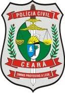

Está em andamento o prazo para inscrição no concurso para a Polícia Civil do Estado do Ceará. O cargo disponível é Inspetor de Polícia Civil de 1ª Classe, com salário de R$ 2.125,14, por uma jornada de trabalho de 40 horas semanais.
No total, foram abertas 740 vagas para serem disputadas pelos concurseiros. Para se inscrever no concurso, basta acessar o site da organizadora, a Cespe/UnB, por meio deste link.

A taxa de inscrição custa R$ 80,00 o formulário pode ser preenchido de 29 de novembro de 2011 a 20 de dezembro de 2011. O edital do concurso pode ser baixado por este link.Não esqueça de estudar com base nas provas anteriores de outros concursos da área policial, e boa sorte!